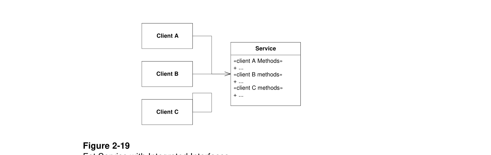

Hình 2-19 cho thấy một lớp với nhiều client, và một giao diện lớn phục vụ tất cả. Lưu ý rằng mỗi khi thay đổi một trong các phương thức mà ClientA gọi, ClientB và ClientC có thể bị ảnh hưởng. Có thể phải biên dịch lại và triển khai lại chúng. Điều này đáng tiếc.
Một kỹ thuật tốt hơn được minh họa ở Hình 2-20. Các phương thức mà mỗi client cần được đặt trong giao diện riêng dành cho client đó. Những giao diện đó được kế thừa đa tầng bởi lớp Service, và được triển khai tại đó.
Nếu giao diện cho ClientA cần thay đổi, ClientB và ClientC sẽ không bị ảnh hưởng. Chúng sẽ không phải biên dịch lại hay triển khai lại.

Service phình to với giao diện tích hợp
Client Specific nghĩa là gì?
ISP không khuyên mọi lớp dùng dịch vụ đều có lớp giao diện riêng mà dịch vụ phải kế thừa. Nếu vậy, dịch vụ sẽ phụ thuộc vào từng client theo cách kỳ quái và không lành mạnh. Thay vào đó, client nên được phân loại theo kiểu, và giao diện cho từng kiểu client nên được tạo.
Nếu hai hoặc nhiều kiểu client khác nhau cần cùng phương thức, phương thức đó nên được thêm vào cả hai giao diện của chúng. Điều này không gây hại hay gây nhầm lẫn cho client.
Thay đổi giao diện. Khi ứng dụng hướng đối tượng được bảo trì, giao diện tới các lớp và component hiện có thường thay đổi. Có lúc những thay đổi này tác động rất lớn và buộc biên dịch lại và triển khai lại phần lớn thiết kế. Tác động này có thể giảm nhẹ bằng cách thêm giao diện mới vào đối tượng hiện có, thay vì thay đổi giao diện hiện tại. Client của giao diện cũ